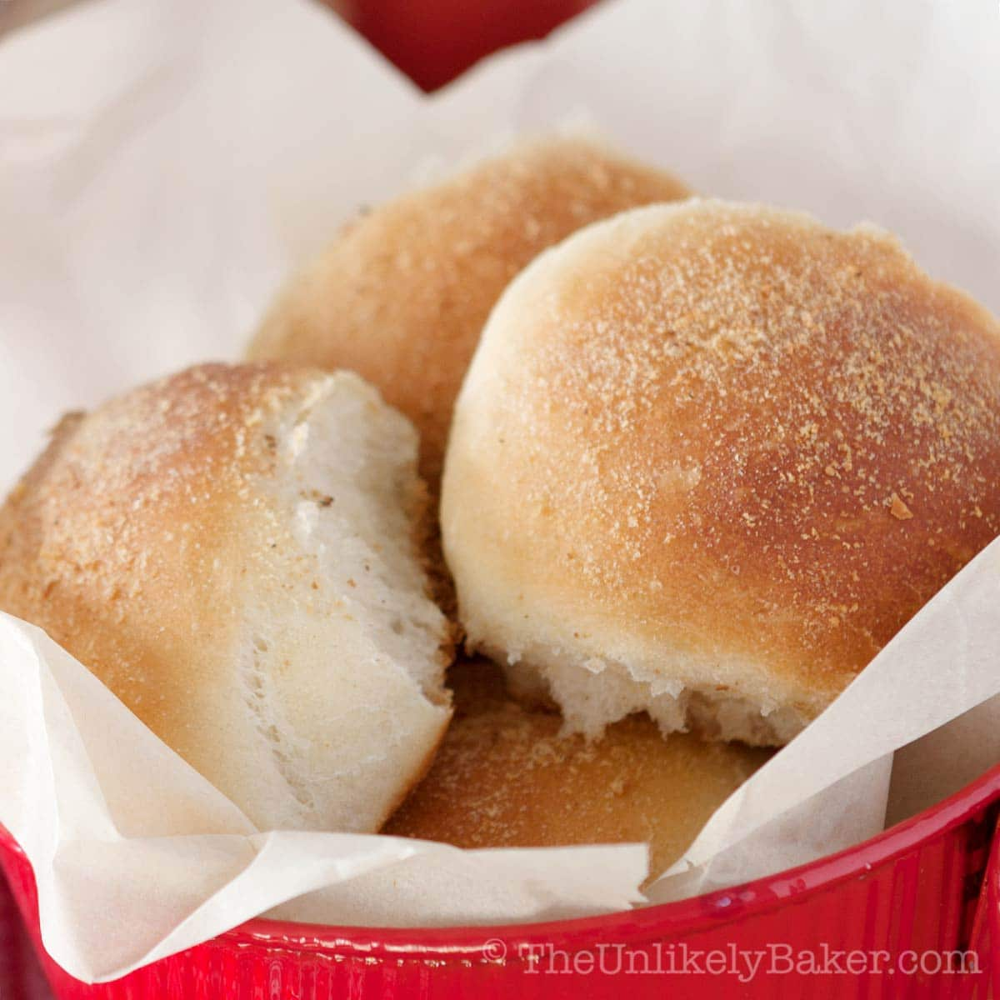

Pandesal

Ingredients
- 2 cups all purpose flour
- 2 cups bread flour
- 1/2 cup white sugar
- 5 tbsp butter melted
- 1 tsp baking powder
- 1 1/4 cup fresh milk warm
- 1 pouch rapid rise yeast
- 1 tsp salt
- 1 cup bread crumbs
- 1 piece raw egg
- 1 tbsp cooking oil
Instructions
- Combine the yeast, 2 tablespoons sugar, and warm milk and stir until the yeast and sugar are fully dissolved
- In the mixing bowl, combine the dry ingredients starting with the flour then the remaining sugar, salt, and baking powder . Mix well by stirring
- Add the egg, butter, cooking oil, and yeast-sugar-milk mixture in the mixing bowl with the dry ingredients then mix again until a dough is formed. Use your clean hands to effectively mix the ingredients.
- In a flat surface, knead the dough until the texture becomes fine. For faster and easier kneading, you may use a Stand Mixer with dough hook.
- Mold the dough until shape becomes round then put back in the mixing bowl. Cover the mixing bowl with damp cloth and let the dough rise for at least 1 hour
- Put the dough back to the flat surface and divide into 4 equal parts using a dough slicer
- Roll each part until it forms a cylindrical shape
- Slice the cylindrical dough diagonally (These slices will be the individual pieces of the pandesal)
- Roll the sliced dough over the breadcrumbs and place in a baking tray with wax paper (makes sure to provide gaps between dough as this will rise later on)
- Leave the sliced dough with breadcrumbs in the tray for another 10 to 15 minutes to rise
- Pre-heat the oven at 375 degrees Fahrenheit for 10 minutes
- Put the tray with dough in the oven and bake for 15 minutes
- Turn off the oven and remove the freshly baked pandesal.
- Serve hot. Share and enjoy!